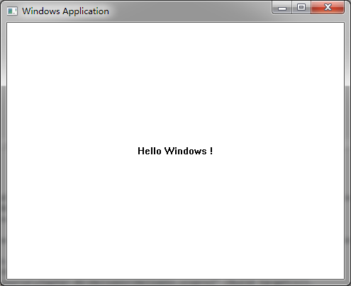

1.1 第一个windows窗口程序
Table of Contents
1.1.1 Hello Windows
就像学习编程时第一个程序总是打印“Hello World !”一样，下面是一个windows版的“Hello Windows !”，这个是windows编程的最小框架，后面我们将在这个框架的基础上一步步实现我们的界面引擎。
#include "stdafx.h" // Includes windows.h and tchar.h
LRESULT CALLBACK WndProc(HWND, UINT, WPARAM, LPARAM);
int APIENTRY _tWinMain(HINSTANCE hinst,
HINSTANCE /*hinstPrev*/,
LPTSTR pszCmdLine,
int nCmdShow) {
LPCTSTR pszMainWndClass = __T("HelloWinApp");
WNDCLASSEX wc = { sizeof(WNDCLASSEX) };
wc.style = CS_HREDRAW | CS_VREDRAW;
wc.hInstance = hinst;
wc.hIcon = LoadIcon(0, IDI_APPLICATION);
wc.hCursor = LoadCursor(0, IDC_ARROW);
wc.hbrBackground = (HBRUSH)(COLOR_WINDOW+1);
wc.lpszClassName = pszMainWndClass;
wc.lpfnWndProc = WndProc;
if( !::RegisterClassEx(&wc) ) return -1;
HWND hwnd = ::CreateWindowEx(WS_EX_CLIENTEDGE,
pszMainWndClass,
__T("Windows Application"),
WS_OVERLAPPEDWINDOW,
CW_USEDEFAULT, 0,
CW_USEDEFAULT, 0,
0, 0, hinst, 0);
if( !hwnd ) return -1;
::ShowWindow(hwnd, nCmdShow);
::UpdateWindow(hwnd);
MSG msg;
while(::GetMessage(&msg, 0, 0, 0)) {
::TranslateMessage(&msg);
::DispatchMessage(&msg);
}
return msg.wParam;
}
LRESULT CALLBACK WndProc(HWND hwnd, UINT nMsg, WPARAM wparam,LPARAM lparam) {
switch( nMsg ) {
case WM_PAINT: {
PAINTSTRUCT ps;
HDC hdc = ::BeginPaint(hwnd, &ps);
RECT rect; ::GetClientRect(hwnd, &rect);
::DrawText(hdc, __T("Hello Windows !"), -1, &rect,
DT_CENTER | DT_VCENTER | DT_SINGLELINE);
::EndPaint(hwnd, &ps);
}
break;
case WM_DESTROY:
::PostQuitMessage(0);
break;
default:
return ::DefWindowProc(hwnd, nMsg, wparam, lparam);
break;
}
return 0;
}
1.1.2 窗口程序的基本结构
一个典型的windows窗口程序有如下结构：
- 程序入口_tWinMain。
- 调用RegisterClassEx注册窗口类。
- 调用CreateWindow创建窗口，窗口创建完成后ShowWindow及UpdateWindow。
- 循环调用GetMessage从窗口消息队列取消息，经过TranslateMessage转义后调用DispatchMessage派发给窗口消息处理过程。
- 在窗口过程WndProc里处理感兴趣的消息。比如上面代码里我们处理WM_PAINT消息，并在窗口正中间显示“Hello Windows !”。

1-1-1第一个windows窗口程序